Professional experience
-
Apr 2025 – present
PhD in bioacoustics
DiTOSS: Digital Twin for Odontoceti Synthetic Survey.
A simulation-to-real pipeline that trains neural networks on synthetic acoustic data to predict whale behavior. It infers sperm whale (Physeter macrocephalus) trajectories and depth from echolocation clicks recorded on hydrophones, enabling non-invasive deep-sea monitoring for conservation.Advisors: Pr. Hervé GLOTIN, Dr. Adeline PAIEMENT, Dr. Sebastian PARIS, Stéphane Jespers
Toulon, France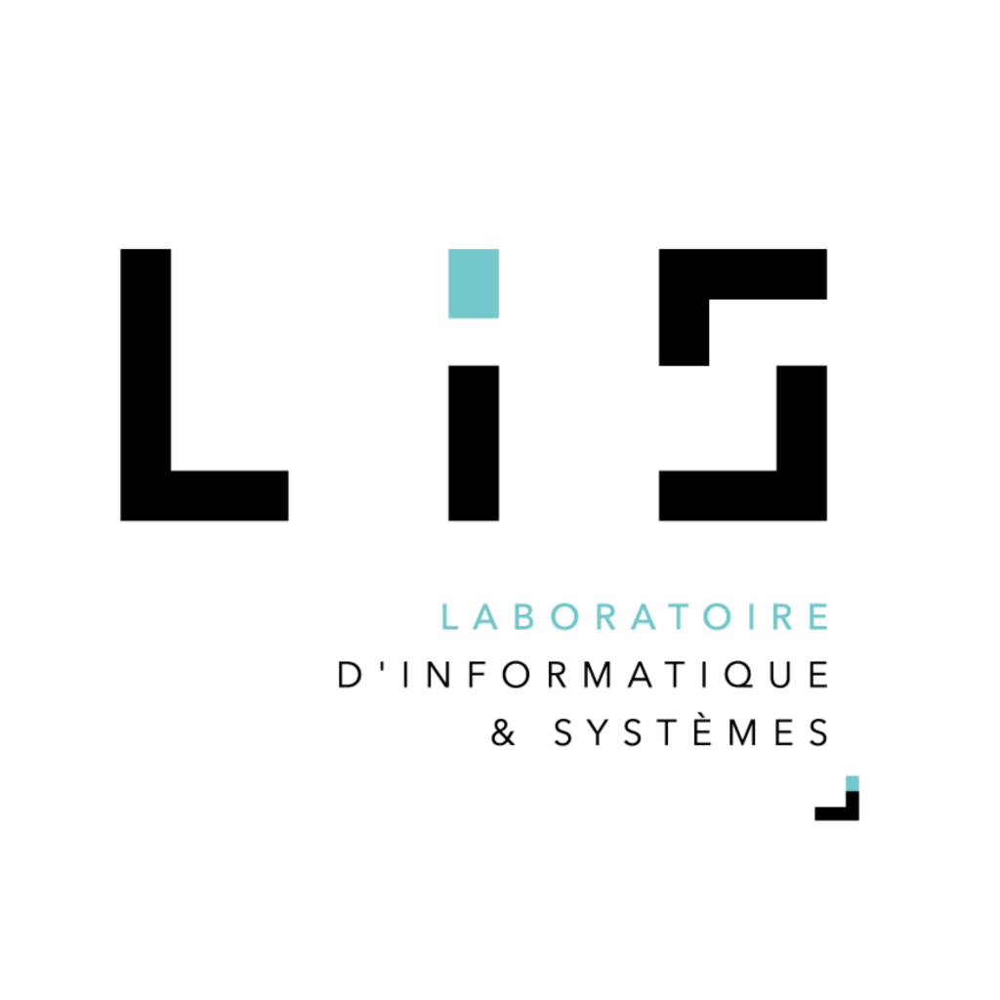
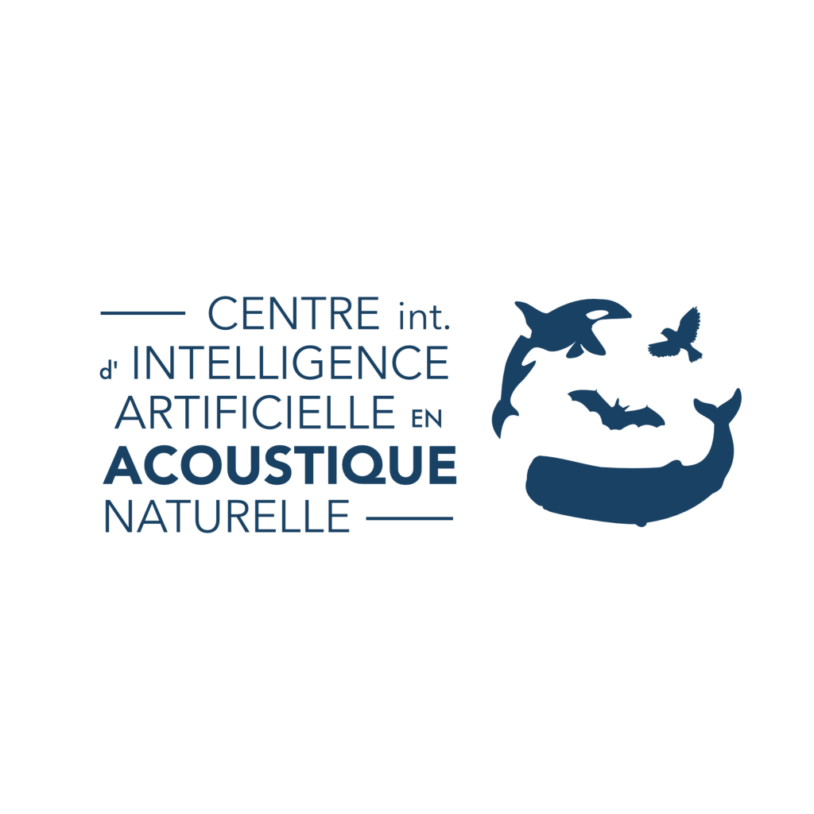
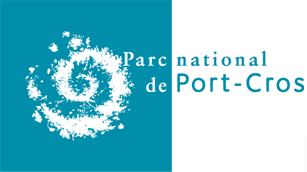
-
Jan 2025 – Apr 2025
Bioacoustics research engineer
Toulon, France -
May – Oct 2024
Engineer internship
Artificial intelligence applied to coral reef biophony.
Automatic detection of parrotfish grazing and grouper growls.DocumentaryParticipation in the Canal+ documentary: La vie secrète de Léo.
Saint-Denis, Réunion Island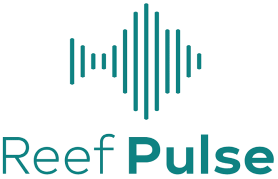
-
Jul – Aug 2023
Research internship
Population monitoring of Stegostoma tigrinum (leopard shark).
Nouméa, New Caledonia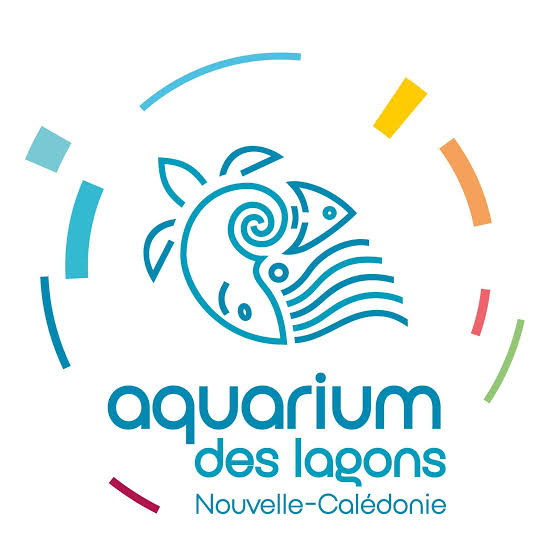
Field missions
-
Sep 2026
Science Participative Mission 12
Real-time recording and localisation of sperm whales and others cetaceans using passive acoustics. Supervision of eco-volunteers in the visual and acoustic identification of cetaceans.
Mediterranean Sea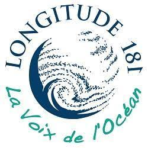
-
May 2026
Port Pothuau Mission
Organisation Acoustic propagation experiments and calibration protocols for hydrophones with active acoustics.
Port Porthuau, Mediterranean Sea -
Mar 2026 - present
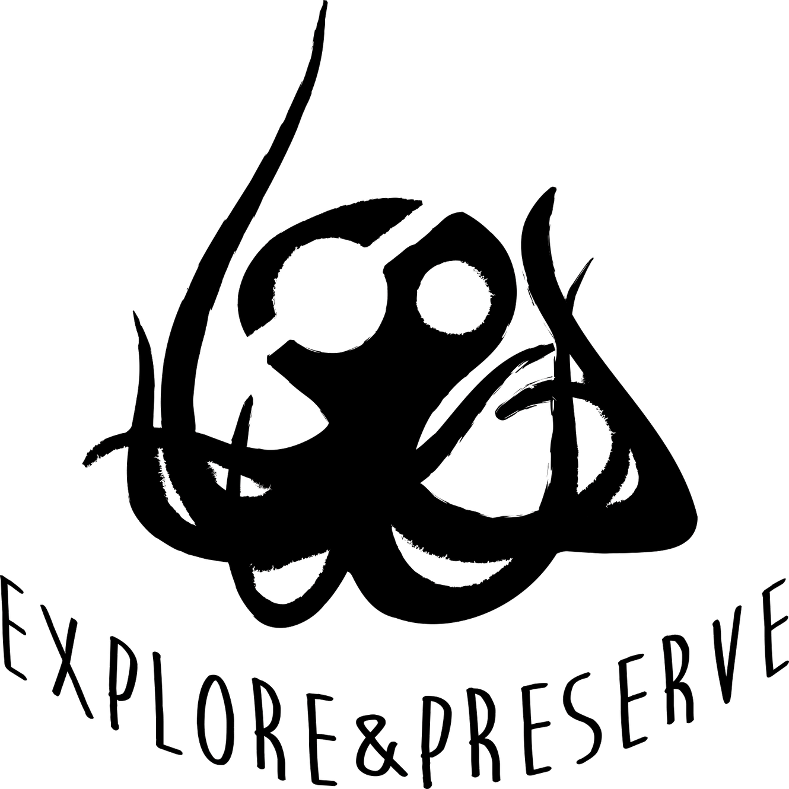
-
Sep 2025
WhaleWay 6 Mission
Real-time recording and localisation of sperm whales and others cetaceans using passive acoustics.
Mediterranean Sea -
2025
Wingfoil experiment
Recording the acoustic signature of different wingfoils.
Port Hélène, Mediterranean Sea -
2024
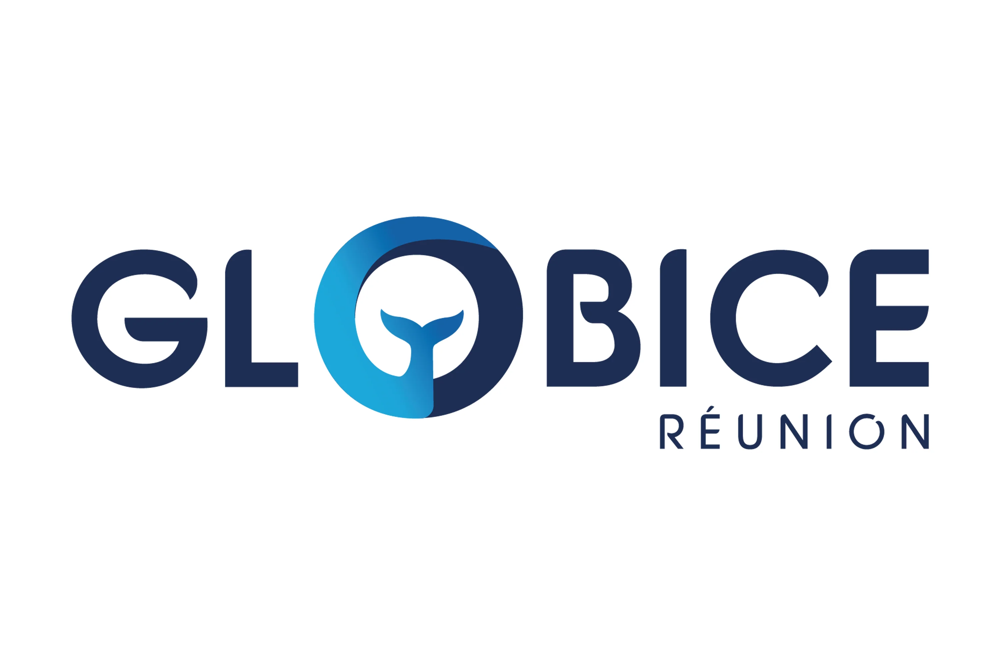
Conferences and seminars
-
Sep 2026
Séminaire LISSÉ
Laboratoire interdisciplinaire de simulation socio-écologique LISSÉTalkWhale ecology of Saint Lawrence, underwater noise, AI in acoustics and imaging, and conservation of belugas and other cetaceans.
Tadoussac, Quebec, Canada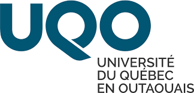
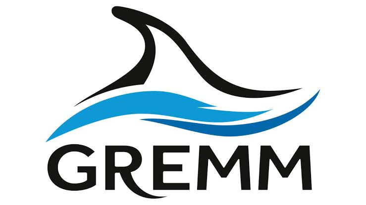
-
Dec 2025
Séminaire EUROPAM 2026
Talk Organisation Continuous passive acoustic monitoring of marine megafauna in the Mediterranean Sea, the Azores and off Norway.
-
Dec 2025
Séminaire du collectif national sur le bruit sous-marin
Direction générale des affaires maritimes, de la pêche et de l'aquaculture DGAMPADirection de l'eau et de la biodiversité DEBOffice français de la biodiversité OFBOrganisation Update of knowledge and studies on human activities generating underwater noise, their emissions, their impacts and trends in their evolution.
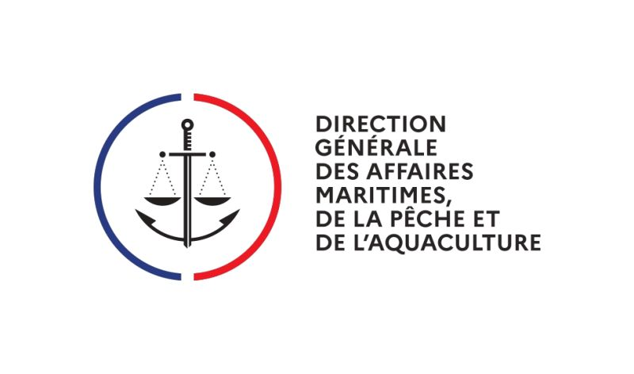
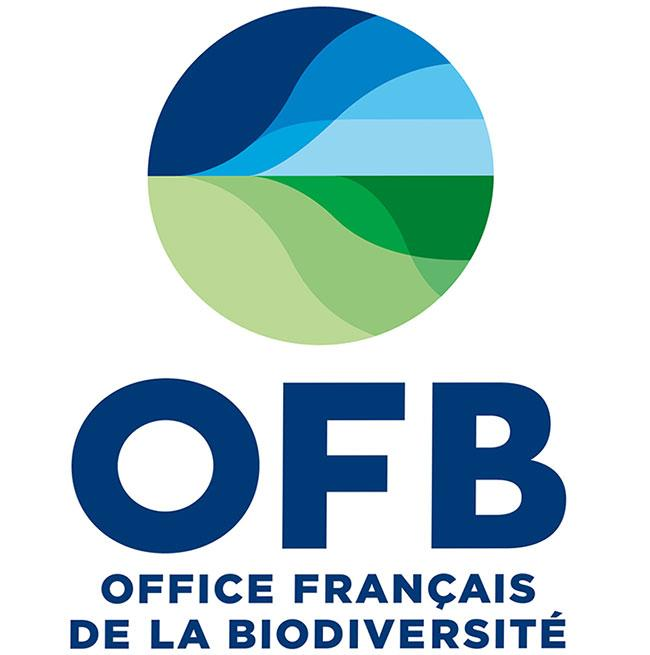
-
Jun 2025
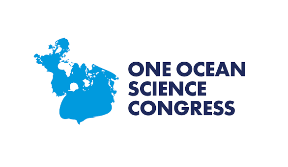
-
2025
Journées des jeunes bioacousticiens JJBA
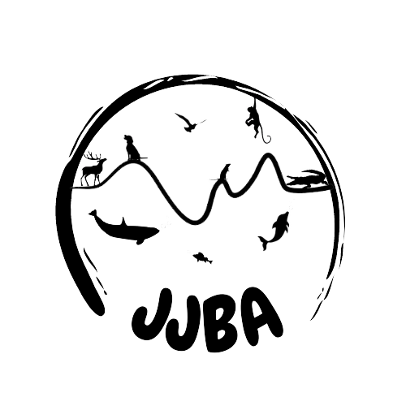
-
2025
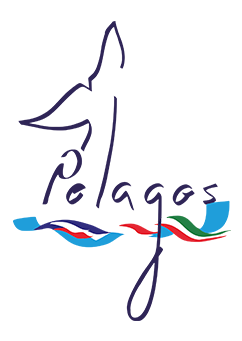
Education
-
2023 – 2024
Engineering Master's
Major Digital & Living Systems, in communicating systems and connected objects.
Rennes, France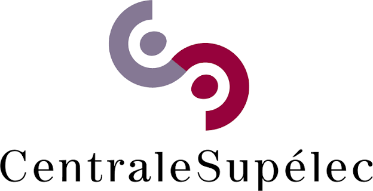
-
2019 – 2024
Engineering degree
General engineering curriculum, then specialisation in Energy and Environment.
Sceaux / Cachan, then Montpellier, France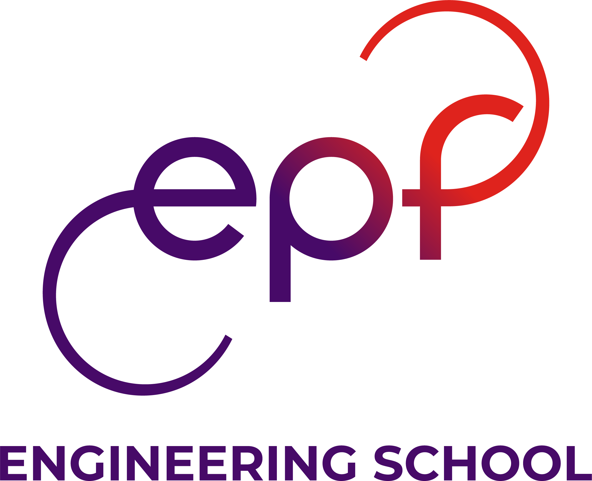
-
Sep 2022 – Jan 2023
-
2023
Conservation MOOC
New technologies for protected areas.
Online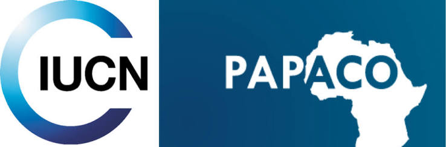
Outreach
-
Nov 2025
Journées de la science
Université de ToulonIntroducing middle and high school students to bioacoustics.
Toulon, France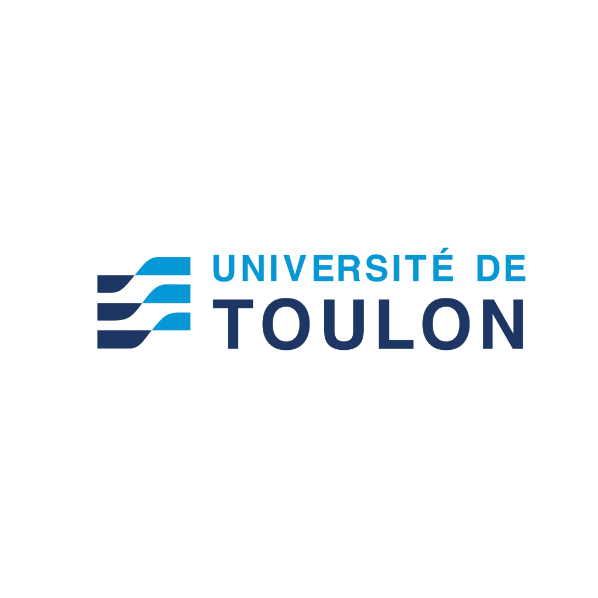
-
One-day mission with high school students
Espace MerEducating high school students on a one-day mission to meet the cetacean species of the Mediterranean.
Mediterranean Sea
Educational projects
-
Feb 2023
Water4Future Hackathon
Montpellier, France -
Jan – Jun 2023
STORALG project
IKOS ConsultingInnovation in large-scale CO₂ storage using microalgae.
Montpellier, France
Tools and skills


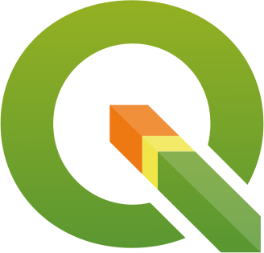
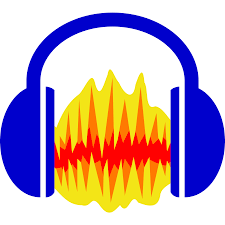
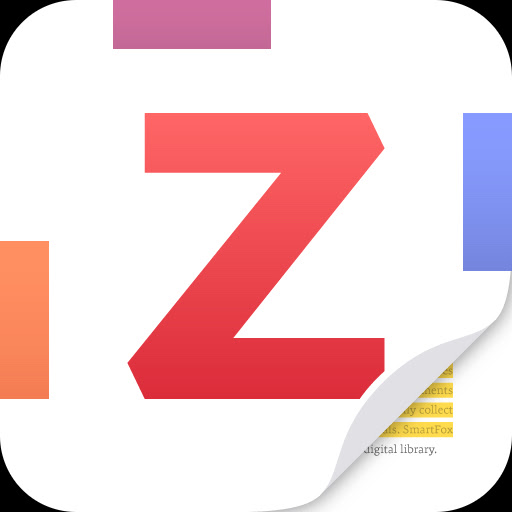
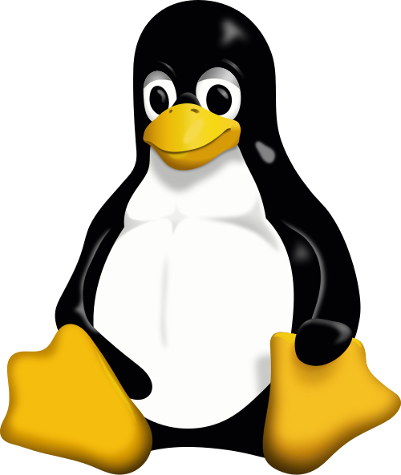
Languages
Beyond work
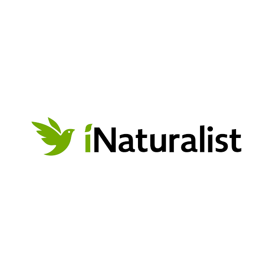
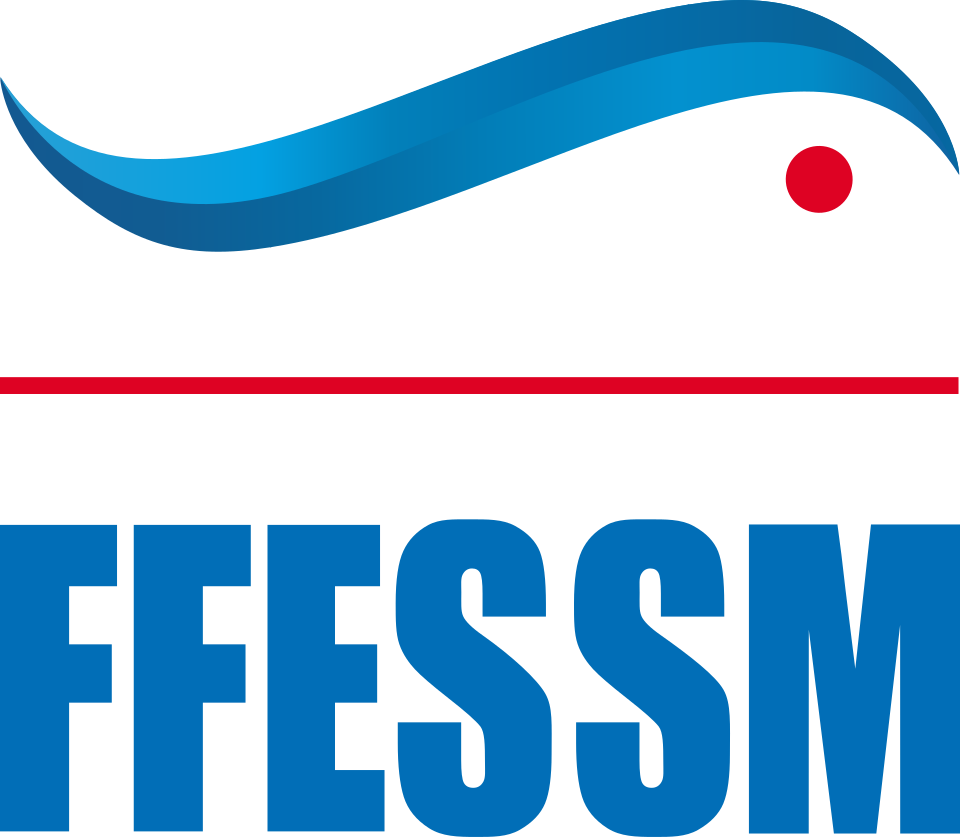

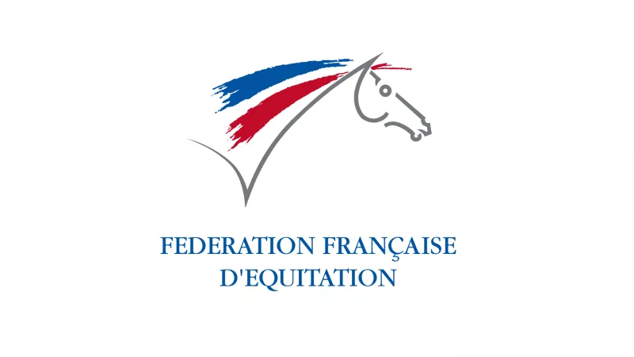